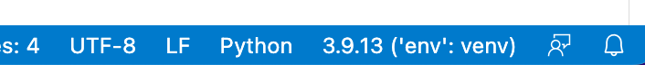

Installation
Development Environment
In order to be able to write and execute Python programs, we will have you install two different pieces of software on your computer:
Python:

This is the Python interpreter (or Python executable). This is the software that will actually read your Python code, and tell the computer how to execute it.
This is usually bundled with an extra piece of software (written in Python!) called 'pip'. Pip is a package manager that is used to install and manage extra Python packages and libraries. It gives you easy access to more powerful tools that aren't necessarily included with Python from the get-go.
The interpreter is technically the only software you need to write and execute Python programs (and it is the most important!), but to make our lives easier we will also install...
Visual Studio Code:

This is a code editor called Visual Studio Code (VSCode) -- not to be confused with Visual Studio, another Microsoft product.
Any Python program that you write will simply be a text file, but with a filename that ends in ".py" (instead of ".txt", or ".doc" for example). Because of this, you can use any simple text editor to write the code if you want (for example Notepad.exe on Windows, or TextEdit.app on Mac -- but not Microsoft Word!).
Nowadays though, many programmers will use a special text editor that makes writing code easier by adding helpful tools like syntax highlighting, autocomplete suggestions, and executing/debugging programs - all from within the text editor!
VSCode is one of these -- it's just a special text editor with helpful features for working with code. A neat bonus is that, while we will be using it for Python exclusively in this class, VSCode also works with most other popular programming languages!
- Side-note: When enough features are bundled together in a code editor, and especially when that editor is specifically targeted towards one particular programming language, it is often called an IDE (Integrated Development Environment). VSCode is like our IDE in this case, although it doesn't have all the features that a true IDE might have - but that's okay, we won't need them for now.
VSCode will also give us the ability to collaboratively write code together in real-time on separate computers!
Python Installation and Setup
Visit the following page to download the latest official Python installer for your operating system:
https://www.python.org/downloads/
The latest Python version will appear as 3.xx.xx, where xx is some version number.
Once you've downloaded the installer (.pkg for MacOS, or .exe for Windows) you can run it simply by double-clicking it.
For the most part, the installation process should be self-explanatory and you can just click through without changing any settings, though there is one extra consideration depending on your operating system:
Windows:
- When the installation begins, on the first screen you should see a checkbox at the bottom for the option to "add Python to PATH". Make sure that box IS CHECKED (you DO want to add the Python executable to your system PATH!), before continuing with installation.
MacOS:
- After the installation is complete, go to your Applications folder and find the Python folder inside (probably named "Python 3.xx"). The installer program may even have opened this folder for you automatically. Inside that folder there should be a file named "Update Shell Profile.command". Double-click on that file to add the Python executable to your system PATH. Some windows may be opened during this process. It's fine to close them.
- You may be asked if you want to move the "Python" Installer to the Trash. You may say yes to this, since the installation is complete.
Visual Studio Code Installation and Setup
Download and Install Instructions:
Visit to the following page to download the official VSCode installer (on Windows you can also install it through the Microsoft App Store): https://code.visualstudio.com/
You'll want to download the latest "Stable" build (which should be the default option for the download button). Continue through the default installation (no need to change any settings).
Then follow the instructions based on your operating system:
Windows:
- Double click on .exe file, accept the license agreement then click next.
- Leave the default destination location unchanged and click next
- Leave the "Select Start Menu Folder" location unchanged and click Next
- Check "Create a desktop icon", leaving the rest of the selections as-is, and click next.
- Finally, click "Install", and "Finish", and the program will open.
MacOS:
- Double-click to unzip, then drag the file "Visual Studio Code" into the "Applications" folder on your mac. You can then drag it again, from the applications folder, to the dock to create a shortcut.
Setup VSCode:
Once installation is done and before you open VSCode, create a new folder on Desktop or Documents named "COMP1351".
Open VSCode and do the following:
- Optionally, go through any initial setup that it walks you through (choosing a theme, etc) or skip all of that for now.
- When VSCode opens you will see the explorer pane on the left (see picture below). Click on Open Folder and navigate to your "COMP1351" folder. Depending on where you saved your COMP1351 folder, and your operating system, at this point you might get a security popup asking you if "you trust the author of the files in this folder" so click yes

- Create a new text file (File -> New Text File) or by clicking the "new file" button (see picture below). Name the file "hello.py" then press return. A new file will be created as in the picture below. Once you've created the file, you may see a popup in the lower-right corner of VSCode asking if you want to install the "Recommended Python (see "Extension" notes below - you can install them now or in a moment).

- Copy/paste the following Python code into that text file:
print("Hello world!")
print("This is my first Python program!")
- Save that file (File -> Save, or Command-S on a Mac and Control-S on Windows).
- Extensions.
- If you have not already installed them, then install them now.
- This will probably take you to another window in VSCode showing the extension info.
- If you didn't get the recommended extensions popup, or have problems starting the installation, you can go to the Extensions tab on the left-hand panel and manually search for the official Microsoft "Python" extension:


- After you're done installing the Python extension, go back your code by selecting the tab at the top with the filename you chose.
- In the bottom-right, you should see a part of the info bar that says "Python" and a version number next to it:  Make sure that version number matches the Python version you installed (for example 3.10.6). If it doesn't, click on the version number and then select the Python executable that you installed earlier.
- You should also now see in the upper-right corner a triangular "play" button. Go ahead and click it to run your Python file!

- If everything is working, you should see a console come up at the bottom of your window, and at the end of the text in that console you should see the text "Hello world!" and "This is my first Python program!" (probably among other things).

Final Setup
If you've gotten this far, congratulations! You have a working Python and VSCode installation! There just two more things to do before you're ready to go for this class:
Live Share Collaboration:
- Go to the Extensions tab of VSCode (the icon on the left that looks like a 2x2 grid with a square popped out).
- From there search for the "Live Share" extension. It will have an official Microsoft check-mark logo attached to it, so you know which one is the correct one.
- Install it!
- Now in the bottom-left of your VSCode window, you should see a "Live Share" button. You'll use this later in class to collaboratively write code with your group!
dudraw Graphics Library:
The dudraw graphics library is a software package written at DU, based on the original stddraw package written at Princeton. It is a simple package that will allow us to draw images and create animations in our python programs. Here's how to install it:
- Make a new Python file (File -> New File... -> Python).
- Copy/paste the following code into the file:
import sys
import subprocess
subprocess.check_call([sys.executable, "-m", "pip", "install", "dudraw"])
import dudraw
dudraw.set_canvas_size(400,400)
dudraw.filled_circle(0.5, 0.5, 0.25)
dudraw.show(10000)
- Save the file somewhere (again, with a ".py" ending, maybe "dudraw_test.py").
- And then run it (again using the triangular "run" button).
- If everything goes well, you should see a window appear with a black circle in it. It will close itself after 10 seconds. That's it!
If something went wrong in any of the steps above, try the videos in the preclass assignment. If those don't help, then please contact your instructor before the first class to get help with setting up.
Introduction to dudraw
What can you do with dudraw?
The python package dudraw is a minimal graphics library developed for teaching a beginning python programming class. Its starting point was stddraw, developed at Princeton University (see Elements of Programming in Python). At the University of Denver we modified and enhanced that package to produce dudraw.
The dudraw package has graphics primitives for drawing points, lines, circles and ellipses, squares and rectangles, triangles, quadrilaterals, polygons, circular and elliptical sectors, annuli and text. You can set the color you want the objects to be, and the width of points, lines and outlines.
You can find out about key-clicks and mouse presses from the user, and respond to them within your program. You can clear the background or use an image from a file as your background. You can save the image you produce to a file.
The dudraw package is a paint-style graphics package. In other words, you draw graphical objects, but they cannot be moved or deleted after being drawn.
How do I get access to dudraw?
If you have not already installed dudraw through the instructions in class, then you can install it by running
pip install dudraw
Then if start your python program with the line
import dudraw
you will be able to call any of the functions in dudraw
How do I use dudraw?
Begin by creating a canvas of a specified size (in pixels), then issue graphics commands. When you are done, call the show()function and a window will appear with the image you have created. Unless you set the scale, the default scale is from 0 to 1 on the x-axis and 0 to 1 on the y-axis. Here's a simple program, and the image it produces.
import dudraw
# open a square window, parameters are width and height, in pixels
dudraw.set_canvas_size(200,200)
# fill the canvas with the given color
dudraw.clear(dudraw.LIGHT_GRAY)
# once the pen color is set, that is the color used until it is changed again
dudraw.set_pen_color(dudraw.DARK_GREEN)
# draw a triangle with vertices (0, 0), (1, 0) and (0.5, 0.7)
dudraw.filled_triangle(0, 0, 1, 0, 0.5, 0.7)
dudraw.set_pen_color(dudraw.YELLOW)
# Draw a circle with center at (0.8, 0.75), with a radius of 0.1
dudraw.filled_circle(0.8, 0.75, 0.1)
# Display the canvas
dudraw.show()

How do I get more colors?
This is a list of the colors pre-defined in dudraw:
dudraw.WHITE
dudraw.BLACK
dudraw.RED
dudraw.GREEN
dudraw.BLUE
dudraw.CYAN
dudraw.MAGENTA
dudraw.YELLOW
dudraw.DARK_RED
dudraw.DARK_GREEN
dudraw.DARK_BLUE
dudraw.GRAY
dudraw.LIGHT_GRAY
dudraw.ORANGE
dudraw.VIOLET
dudraw.PINK
dudraw.BOOK_BLUE
dudraw.BOOK_LIGHT_BLUE
dudraw.BOOK_RED
To create colors of your own, first note that a color on a computer monitor can be defined by an intensity for red light, green light and blue light, each of which is an integer value from 0 to 255. Colors on a compter monitor are additive like light, rather than subtractive like paint. For example, to create yellow light, you add together green light and red light. So the brightest yellow is defined by red=255, green = 255, blue = 0. You can play around with choosing colors with many different programs. On many browsers, if you do an internet search on "color picker" one will show up. Or there are many free ones available on websites, for example here: color picker website. For example, here's a nice plum color, with values r = 140, g = 40, b = 160:

Here's a way to make your background this color, or to set your pen color to this color:
dudraw.clear_rgb(140, 40, 160)
dudraw.set_pen_color_rgb(140, 40,160)
May I see some other shapes?
The code below shows some examples of lines and basic shapes that are affected by the pen radius.
#---------------------------------------------
# demonstration of some basic shapes in dudraw
#---------------------------------------------
import dudraw
# open a 600x200 pixel canvas, and set the scale to one unit per pixel
dudraw.set_canvas_size(600,200)
dudraw.set_x_scale(0,600)
dudraw.set_y_scale(0,200)
dudraw.clear(dudraw.LIGHT_GRAY)
# draw a vertical line, from (10,10) to (10,100)
dudraw.line(10, 10, 10, 190)
# change the color, and change the width of the pen to 4 units (which is 4 pixels in this example).
dudraw.set_pen_color(dudraw.VIOLET)
dudraw.set_pen_width(4)
dudraw.line(30, 10, 30, 190)
# make a green rectangle with a thick outline
dudraw.set_pen_color(dudraw.DARK_GREEN)
dudraw.set_pen_width(10)
dudraw.rectangle(100, 100, 50, 90) # center at (100,100), half-width=50, half-height = 90
# ellipse with thin red outline
dudraw.set_pen_color(dudraw.RED)
dudraw.set_pen_width(1)
dudraw.ellipse(200, 100, 30, 90) # center at (200, 100), half-width = 30, half-height = 90
# Blue quadrilateral
dudraw.set_pen_color(dudraw.DARK_BLUE)
dudraw.set_pen_width(3)
# The four vertices are (250, 10), (250, 190), (300,190), (275, 10)
dudraw.quadrilateral(250, 10, 250, 190, 300, 190, 275, 10)
# Sector, notice that the color and width were not changed, so the values remain as before
# The center is at (350, 100). The radius is 50. The last two parameters give the starting and
# ending angles, in degrees. Angles are measured as typical in mathematics,
# counter-clockwise starting at the positive x-axis
dudraw.sector(350, 100, 50, 30, 330)
# points: size is controlled by the pen width, parameters are just the location of the point
dudraw.set_pen_color(dudraw.CYAN)
dudraw.set_pen_width(10)
dudraw.point(450, 150)
dudraw.point(500, 150)
# elliptical arc: give the center point, the radius in the x-direction, the radius in
# the y-direction, and the start/stop angles.
# Angles are measured as typical in mathematics, counter-clockwise starting at the positive x-axis
dudraw.set_pen_color(dudraw.PINK)
dudraw.elliptical_arc(475, 150, 50, 100, 200, 340)
dudraw.show()

These are not the only shapes affected by the pen width setting. Others include dudraw.circle(), dudraw.square(), dudraw.polygon(), dudraw.triangle(), dudraw.arc(), dudraw.elliptical_sector(), and dudraw.annulus().
There are also dudraw primitives that produce filled regions rather than outlines, and these are not affected by the pen width. Here's a program with some examples of filled regions.
#----------------------------------------------------
# demonstration of some basic filled shapes in dudraw
#----------------------------------------------------
import dudraw
# open a 600x200 pixel canvas, and set the scale to one unit per pixel
dudraw.set_canvas_size(600,200)
dudraw.set_x_scale(0,600)
dudraw.set_y_scale(0,200)
dudraw.clear(dudraw.LIGHT_GRAY)
# draw a vertical line, from (10,10) to (10,100)
dudraw.line(10, 10, 10, 190)
# change the color, and change the width of the pen to 4 units (which is 4 pixels in this example).
dudraw.set_pen_color(dudraw.VIOLET)
dudraw.set_pen_width(4)
dudraw.line(30, 10, 30, 190)
# make a green filled rectangle with a thick outline
dudraw.set_pen_color(dudraw.DARK_GREEN)
dudraw.filled_rectangle(100, 100, 50, 90) # center at (100,100), half-width=50, half-height = 90
# red ellipse
dudraw.set_pen_color(dudraw.RED)
dudraw.filled_ellipse(200, 100, 30, 90) # center at (200, 100), half-width = 30, half-height = 90
# filled Blue quadrilateral
dudraw.set_pen_color(dudraw.DARK_BLUE)
# The four vertices are (250, 10), (250, 190), (300,190), (275, 10)
dudraw.filled_quadrilateral(250, 10, 250, 190, 300, 190, 275, 10)
# Sector, notice that the color was not changed, this sector is also dark blue.
# The center is at (350, 100). The radius is 50. The last two parameters give the starting and
# ending angles, in degrees. Angles are measured as typical in mathematics,
# counter-clockwise starting at the positive x-axis
dudraw.filled_sector(350, 100, 50, 30, 330)
# points: size is controlled by the pen width, parameters are just the location of the point
# The points are left in this drawing you so can compare to the images of unfilled regions
dudraw.set_pen_color(dudraw.CYAN)
dudraw.set_pen_width(10)
dudraw.point(450, 150)
dudraw.point(500, 150)
# filled elliptical sector: give the center point, the radius in the x-direction, the radius in
# the y-direction, and the start/stop angles.
# Angles are measured as typical in mathematics, counter-clockwise starting at the positive x-axis
dudraw.set_pen_color(dudraw.PINK)
dudraw.filled_elliptical_sector(475, 150, 50, 100, 200, 340)
dudraw.show()

These are not the only filled shapes. Other examples include dudraw.filled_triangle(), dudraw.filled_circle(), dudraw.filled_polygon(), and dudraw.filled_annulus().
How do I change the scale?
By default, the scale in a dudraw canvas is [0, 1] x [0, 1], even if the size of the canvas itself is not square. For example, the code below produces the image shown. (The image is annotated to show the coordinates of a few points)
import dudraw
dudraw.set_canvas_size(600,400)
dudraw.clear(dudraw.LIGHT_GRAY)
dudraw.set_pen_color(dudraw.DARK_GREEN)
dudraw.filled_triangle(0, 0, 1, 0, 0.5, 0.7) # green triangle mountain
dudraw.set_pen_color(dudraw.YELLOW)
dudraw.filled_circle(0.8, 0.75, 0.1) # yellow circle sun
dudraw.show()

But sometimes you might prefer to set the scale to match the pixels, or some other scaling. This is often useful if the canvas is not square. Here's the code to produce a nearly identical drawing, with the scale on the x-axis and y-axis set to be different from each other, and to have one unit be the size of one pixel. The canvas was created with a width of 600 pixels and a height of 400 pixels. The x-scale is set to go from 0 to 600, while the y-scale is set to go from 0 to 400. Notice that each graphics primitive was modified to reflect the change of scale. The image below is annoted to show how the scale on the axes works.
import dudraw
dudraw.set_canvas_size(600, 400)
dudraw.set_x_scale(0, 600)
dudraw.set_y_scale(0, 400)
dudraw.clear(dudraw.LIGHT_GRAY)
dudraw.set_pen_color(dudraw.DARK_GREEN)
dudraw.filled_triangle(0, 0, 600, 0, 300, 280) # green triangle mountain
dudraw.set_pen_color(dudraw.YELLOW)
dudraw.filled_circle(480, 300, 40) # yellow circle sun
dudraw.show()

When you create a drawing, the first thing you should do is decide on your scale, since that is the basis for all of the numbers in each shape you draw.
How do I change the font and the size of text?
To change the font, use the method dudraw.set_font_family("FontName").
To change the size of the font, use dudraw.set_font_size(size).
The size is in points. The default font family is Helvetica, and the default size is 12 points Here is demo code and the resulting image:
import dudraw
dudraw.set_canvas_size(500,250)
dudraw.set_font_family("Courier")
dudraw.set_font_size(40)
dudraw.text(0.5, .2, "Courier 40 point")
dudraw.set_font_family("Helvetica")
dudraw.set_font_size(24)
dudraw.text(0.5,0.4, "Helvetica 24 point")
dudraw.set_font_family("Times New Roman")
dudraw.set_font_size(12)
dudraw.text(0.5, 0.6, "Times New Roman 12 point")
dudraw.set_font_family("Arial")
dudraw.set_font_size(6)
dudraw.text(0.5, 0.8, "Arial 6 point")
dudraw.show()

How do I create an animation?
Animation is usually created with a while loop. The following template shows what usually goes in the body of the while loop:
- clear the background
- redraw the next frame of the animation
- call
dudraw.show(wait_time)
When you pass a parameter to dudraw.show(), the program pauses for the given wait_time, which is a float value giving the time in milliseconds.
Here is sample code that animates a circle appearing to move from the lower left corner of the canvas to the upper right corner:
# Simple demo program of animation
# Animate a circle moving diagonally across the canvas
import dudraw
# (x, y) is the position of the center of the circle
x = 0
y = 0
# animation loop:
while True:
# clear the background to prepare for the next frame
dudraw.clear(dudraw.GRAY)
# Update circle to the new position.
x = x + 0.01
y = y + 0.01
# Draw circle at curent position, radius is a constant 0.05
dudraw.filled_circle(x, y, 0.05)
# Display the next frame, and pause 20 milliseconds
dudraw.show(20)
How do I found out if the user clicked the mouse?
There are three dudraw methods for handling mouse ineraction
The function dudraw.mouse_pressed() returns a boolean, True if the mouse was pressed. It is typically used within an animation loop.
You can find out the position of the mouse (regardless of whether the mouse is pressed) by calling dudraw.mouse_x() and dudraw.mouse_y(). Each returns a float with the current position of the mouse. The position of the mouse is relative to the scale that has been set. Here's a sample program showing mouse interaction. Each time the mouse is pressed, a small circle on the canvas at the mouse position.
#--------------------------------
# demo of mouse presses in dudraw
#--------------------------------
import dudraw
dudraw.set_canvas_size(500,500)
# animation loop
while True:
# when mouse is pressed, draw a circle of radius 0.02 at the mouse location
if dudraw.mouse_pressed():
dudraw.filled_circle(dudraw.mouse_x(), dudraw.mouse_y(), 0.02)
# pause for 200th of a second
dudraw.show(50)
How do I find out if the user typed a key?
Polling for a key click typically happens within an animation loop. You must first call dudraw.has_next_key_typed(), which returns a boolean indicating whether the user has typed a key (or perhaps more than one). If the method returns True, then you can make a call to dudraw.next_key_typed(), which will return a string containing the next most-recently entered key. As an example, the following code is a modification of the mouse interaction code, with the added feature of quiting when the 'q' key is typed:
#-------------------------------------------------
# demo of mouse presses and key presses in dudraw
#-------------------------------------------------
import dudraw
dudraw.set_canvas_size(500,500)
done = False
# animation loop
while not done:
# when mouse is pressed, draw a circle of radius 0.02 at the mouse location
if dudraw.mouse_pressed():
dudraw.filled_circle(dudraw.mouse_x(), dudraw.mouse_y(), 0.02)
# pause for 200th of a second
dudraw.show(50)
if dudraw.has_next_key_typed() and dudraw.next_key_typed()=='q':
done = True
How do I save my image in a file?
Use the dudraw.save() function. You can output either .png files or .jpg files. The extension you use in the file name determines what file type is output.
Here's an example of a program that draws a very simple picture, and saves the output to two files, one .png and one .jpg:
#-----------------------------------
# demo of saving to a file in dudraw
#-----------------------------------
import dudraw
# draw a red circle on a field of white
dudraw.set_canvas_size(300,300)
dudraw.set_pen_color(dudraw.RED)
dudraw.filled_circle(0.5, 0.5, 0.25)
dudraw.save("red_circle.jpg")
dudraw.save("red_circle.png")
Notice that this program does not have a call to dudraw.show(). This means that, although the image is saved to both files, a window displaying the image is never opened, and the image is not displayed to the screen.
How do I get official details on all of the methods?
See here for the official documentation:
https://cs.du.edu/~intropython/dudraw/
And here for the source code:
https://git.cs.du.edu/dudraw/dudraw
Notes for Class Meeting 1
Goals:
- Introduction to course (Canvas, syllabus)
- Download and run VSCode (an IDE for working with the Python programming language)
- Create static drawings using Python and the dudraw package
- Create drawings using basic shapes with different locations, sizes and colors.
- Create functions as a way of separating code into logical blocks
What are Python, VSCode and dudraw?
-
Python is a programming language, one of the languages commonly used in industry and academia.
-
VSCode is free software that allows you to create and run Python programs. To create a Python program, you first write code in a text editor. The VSCode program has a built-in editor that you will use for this step. Then, the Python code that you write must be converted to instructions that a computer can directly understand. This conversion step is known as compiling. VSCode provides the ability to compile Python programs. You can then run (execute) the compiled computer instructions, and VSCode also has an interface that allows you to do that. Finally, when you run your programs, often you will accidentally have made mistakes (called "bugs"). The process of figuring out and fixing these errors is called "debugging". The VSCode program has built-in components that help you debug. Since VSCode has these many capabilities rolled into one program (editing, compiling, running, debugging), it is called an Integrated Development Environment (or IDE). There are many IDEs for Python available, some free and some for purchase. VSCode is one of the common IDEs used today in industry.
-
dudraw is a software package containing a collection of Python functions (code) for producing simple graphical output and animations. It is a modification and enhancement of code written and developed at Princeton University for undergraduates to use in beginning programming classes. It is available for free. You may find more information here: https://cs.du.edu/~intropython/dudraw/
First graphics program
Key ideas of the draw_line program using dudraw:
- A Python program which uses the `dudraw`` library to draw several lines is shown below:
"""
Example program to draw several lines using dudraw
Author:
Date:
Description of program
"""
import dudraw
# Create a canvas which is 500 pixels by 500 pixels
dudraw.set_canvas_size(500, 500)
# draw two lines on the canvas
dudraw.line(0.33, 0.0, 0.66, 1.0)
dudraw.line(0.66, 0.0, 0.33, 1.0)
# show the canvas for 10000 milliseconds
dudraw.show(10000)
- When using DUDraw, start by setting the size of the canvas you are drawing on using
dudraw.set_canvas_size() - The numbers represent the size of the canvas in pixels. The first number is the width in pixels and the second is the height in pixels. Pixels are the smallest "picture element" which can be drawn on the computer screen.
- The
dudraw.line()statement draws a line between two endpoints (locations) on the canvas. The first two numbers specify the x and y coordinates (location) of the first endpoint and the last two numbers specify the x and y coordinate (location) of the second endpoint. dudraw.set_canvas_size()anddudraw.line()are examples of commands, also known as "function calls". Commands may take parameters (information), which go inside the parentheses and which give the details about what you want the command to do.- Go to https://cs.du.edu/~intropython/dudraw/ for detailed information about graphics commands available in DUDraw.
- Just like in your algebra or calculus classes, the origin (x=0, y=0) in
dudrawis the lower left-hand corner. Values for x increase to the right and values for y increase upwards, like you're used to in your mathematics classes. - The default scale on the axes in
dudrawis 1 unit horizontally and 1 unit vertically for the entire window. This can be changed if you like. The code below changes the scale creates a scale of 1 unit per pixel.
import dudraw
# create a 600 pixel wide by 400 pixel tall canvas
dudraw.set_canvas_size(600,400)
# set the scale on each axis to be one unit per pixel
dudraw.set_x_scale(0, 600)
dudraw.set_y_scale(0, 400)
# fill the background with light gray
dudraw.clear(dudraw.LIGHT_GRAY)
# draw a line from upper left corner to lower right corner
dudraw.line(0, 400, 600, 0)
# show the canvas for 10000 milliseconds
dudraw.show(10000)
- The code we write is called source-code, readable by people. The compiler converts source-code into machine-code, which is executable (runnable) by the computer. In VSCode, after making changes to your code, click the "play" button to compile and then execute (run) the program. If your code has a syntax error (which is like a grammatical error), then the compiler gives an error message, and the code will not run until you fix it. If your code has a logical error (which we refer to as a bug), then your program will compile and run, but will not behave the way you expect.
- Comments are embedded in a program. Their purpose is to help people reading the program to understand the thought process of the programmer (you). The compiler ignores them, so they have zero effect on how the program runs. Comments should add conceptual information rather than just parroting back what the code itself says. So for example, here is some Bad commenting, which does not add any additional information for the reader:
# Here is an example of some unhelpful comments:
dudraw.set_canvas_size(600,400) # make the size 600 by 400
dudraw.line(0, 400, 600, 0). # make a line
- There are two types of comments: block comments and in-line comments. Block comments are bracketed between the symbols
'''or""". Everything between those two symbols is a comment, ignored by the interpreter. In-line comments start with the symbol#. Everything after the#on the same line is a comment and is ignored by the interpreter, - Use tabs to properly indent code.
Second graphics program: using circles, arcs and rectangles to draw a happy face
"""
Author: Jane Smith
Date: September, 2021
My second graphics program:
Draw a happy face using rectangles, circles and arcs
"""
import dudraw
# Create a 400 wide by 400 tall canvas to draw upon
dudraw.set_canvas_size(400,400)
# Set horizontal scale to be one unit per pixel
dudraw.set_x_scale(0,400)
# Set vertical scale to be one unit per pixel
dudraw.set_y_scale(0,400)
# gray background
dudraw.clear(dudraw.LIGHT_GRAY)
dudraw.set_pen_color(dudraw.WHITE)
dudraw.filled_ellipse(200,200,200,200)
dudraw.set_pen_color(dudraw.BLACK)
# draw the head
dudraw.ellipse(200,200,200,200)
# draw the left eye
dudraw.rectangle(125,275,25,25)
# draw the right eye
dudraw.rectangle(275,275,25,25)
# draw the smiling mouth
dudraw.arc(200,175,100,180,360)
dudraw.show(10000)
Program output:

Key ideas of the happy-face program:
- Make it a practice to use on-line documentation.
- For rectangles, the first two parameters passed to the
dudraw.rectangle()command are the x- and y-coordinates of the center of the rectangle, and the second two numbers are the half-width and half-height of the rectangle. - Draw circles with the
dudraw.ellipse()command. Draw disks (filled circles) with thedudraw.filled_ellipse()command. For these two commands, the first two parameters are the center of the ellipse, the second two parameters are the half-width and half-height of the ellipse (for a circle, the half-width and half-height should both be the same, and equal to the radius). - An arc is part of a circle. The parameters to the
dudraw.arc()command are two numbers for the center of the circle, then radius, and finally start and stop angle. Angles are measured in degrees. Like you see in a trigonometry class, an angle of 0 will point in the positive x-direction and increase in a counter-clockwise direction.
A modification to the happy-face program: creating and using our own commands (aka functions)
It is often useful to separate parts of our code into logical blocks and to create new commands (or functions) using these snippets of code. This strategy is helpful because it makes it more convenient to share code with each other. But additionally, as we'll see in a future class, creating functions allows us to write more flexible code and to avoid duplicating our work. Below is a version of the happy face program that defines and uses its own command (function). The output is identical to the original version.
"""
Author: Jane Smith
Date: September, 2021
Improvement to my second graphics program:
Draw a happy face using rectangles, circles and arcs
This time use a method to separate a logical block of code
"""
import dudraw
# This function draws a primitive smiling face, filling the region from (0,0) to (400,400) */
def draww_face():
dudraw.set_pen_color(dudraw.WHITE);
dudraw.filled_ellipse(200,200,200,200);
dudraw.set_pen_color(dudraw.BLACK);
dudraw.ellipse(200,200,200,200); # Draw the head
dudraw.rectangle(125,275,25,25); # left eye
dudraw.rectangle(275,275,25,25); # right eye
dudraw.arc(200,175,100,180,360); # smiling mouth
# Create a 400 wide by 400 tall canvas to draw upon
dudraw.set_canvas_size(400,400)
# Set horizontal scale to be one unit per pixel
dudraw.set_x_scale(0,400)
# Set vertical scale to be one unit per pixel
dudraw.set_y_scale(0,400)
# gray background
dudraw.clear(dudraw.LIGHT_GRAY)
draww_face()
dudraw.show(10000)
Third graphics program: a happy face with more colors
"""
Author: Jane Smith
Date: September, 2021
My third graphics program:
Draw a happy face using rectangles, circles and arcs
But add some color and changes to line thickness this time
"""
import dudraw
# This function draws a primitive smiling face, filling the region from (0,0) to (400,400)
def draw_face():
dudraw.set_pen_width(3) # set line thickness to 3 pixels
dudraw.set_pen_color(255,255,0) # yellow for the face
dudraw.filled_ellipse(200,200,200,200) # face
dudraw.set_pen_color(0,255,255) # cyan to outline the face
dudraw.ellipse(200,200,200,200) # Draw the outline of the face
dudraw.set_pen_color(137,114,85) # Brown for the eyes
dudraw.filledRectangle(125,275,25,25) # left eye
dudraw.filledRectangle(275,275,25,25) # right eye
dudraw.set_pen_color(194,106,206) # lavender for the lips
dudraw.set_pen_width(10) # 10 pixel-wide line for the mouth
dudraw.arc(200,175,100,180,360) # smiling mouth
dudraw.set_canvas_size(400,400) # Create a 400 wide by 400 tall canvas to draw upon
dudraw.set_x_scale(0,400) # Set horizontal scale to be one unit per pixel
dudraw.set_y_scale(0,400) # Set vertical scale to be one unit per pixel
dudraw.set_pen_color(255,0,0) # bright red
dudraw.filled_rectangle(200,200,200,200) # red background
draw_face()
dudraw.show(10000)
Program output:

Key ideas of the third program:
- A common way to specify colors in computer graphics is to define the amount of red light, green light and blue light to use. The intensity of each color is a number from 0 to 255. For example, the command
dudraw.set_pen_color(255,0,0)sets the current color to full intensity red, no component of green, and no component of blue. - Since colors on the screen are defined by adding light intensity rather than adding pigment intensity, mixing colors on the screen works differently than mixing paint. For example, black is an intensity of 0 for all three colors, white is an intensity of 255 for all three colors, and pure yellow comes from full intensity red (255) plus full intensity green (255). For more details, see https://en.wikipedia.org/wiki/RGB_color_model.
- To find an on-line color selector tool, do an internet search on "rgb color picker". This type of tool gives you numerical red/green/blue color values for specific colors.
- To change the width of lines (and arcs), use the
dudraw.set_pen_width()command, which takes one parameter that gives the width of the line (or curve) in pixels. For example,dudraw.set_pen_width(3)sets the line thickness to be 3 pixels.
Data Science
Python is becoming an increasingly popular choice for many applications, but in particular it has become one of the standards in the field of Data Science.
Because of its popularity and applicability to this field, let's explore a few fundamental techniques for working with existing datasets and how Python can help make our lives easier!
Tabular Data
First, let's focus on a common data format known as "tabular data". This just means data that is best represented as a table. A relatable way of thinking about this kind of data might be an Excel spreadsheet that represents a collection of "items" of the same type. Each row represents one "item", and each column is an attribute of that "item":
| Name | Age | Favorite Icecream |
|---|---|---|
| Bob | 24 | Chocolate |
| Alice | 31 | Vanilla |
| John | 48 | Strawberry |
For example, this a sheet of "people", where each row is a "person", and each column is an attribute of that person.
There are many different ways of working with tabular data (storing it, reading it, modifying it, analyzing it) and we're going to focus on one that will let us explore and use the data structures we're already familiar with.
CSV (Comma-Separated Values)
The simplest way of representing a table is to just put it in a text file. Even for this, there are many ways you could choose to do it, but probably the most common way is using comma-separated-values (CSV).
Each row of text will represent one item, where the attributes of that item are separated by commas. Typically, the first row of text in the file will be the names of the columns (attributes):
name,age,fav_icecream
Bob,24,chocolate
Alice,31,vanilla
John,48,strawberry
Note: sometimes this can be hard to read visually due to the mis-alignment of columns. If you're using VSCode (or something similar) you can install add-ons that color your CSV to make the columns clearer (or add spacing to align them).
Since a .csv file is just a text file, we can read it as we would normally read any text file in Python (with the open() function). But turning that text into other data structures (lists/dictionaries) is so common that Python has a built-in CSV reader!:
import csv
with open('mydata.csv') as csvfile:
rows = csv.reader(csvfile)
for r in rows:
print(r)
# r is a list of the values
# [value1, value2, ...]
So in one go, we've turned the CSV file full of text into a list of lists, containing our data!
NOTE: You can also read files with separators other than a comma:
rows = csv.reader(csvfile, delimiter=';')
The CSV format is more general than the specific use-case we're talking about here (tabular data) - it's really just a way of storing lists of values in rows! For the specific use-case of tabular data (i.e. items in rows, with attributes in columns, and a starting row of column names) there's a specific tool that we'll use from the csv module:
with open('mydata.csv') as csvfile:
# here's the magic step:
rows = list(csv.DictReader(csvfile))
for r in rows:
print(r)
# r is now a dictionary!
# { column_name: attribute, ... }
So now, we've turned our text (CSV) representation of a table... into a list of dictionaries!!! Each dictionary represents one full "Person", with all of their attributes. It looks like this:
[
{ "name": "Bob",
"age": 24,
"fav_icecream": "chocolate" },
{ "name": "Alice",
"age": 31,
"fav_icecream": "vanilla" },
{ "name": "John",
"age": 48,
"fav_icecream": "strawberry"}
]